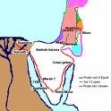

Au Commencement...

Adam et Ève
Le nom du premier livre de la Bible, la Genèse, signifie commencement. Les deux premiers chapitres de la Genèse nous disent que Dieu a créé l'univers: les étoiles, la terre et toutes les autres planètes, et tout être vivant existant ou ayant existé. La création la plus spéciale de Dieu fut l'être humain: nous. Les être humains sont spéciaux parce qu'ils sont créés à l'image de Dieu lui-même. (Voir Genèse 1:26-27)

Le troisième chapitre de la Genèse raconte comment le péché est entré dans le monde. Adam et Ève, le premier homme et la première femme, furent tentés à croire que Dieu leur avait menti. Ils crurent ce mensonge et furent ensuite convaincus qu'ils pourraient en fait ÊTRE comme Dieu. Quand Dieu vit qu'ils avaient été désobéissants, Adam et Ève perdirent la relation ouverte dont ils avaient joui avec Dieu; le péché les avait séparés de Dieu. Et cela a été ainsi pour chaque personne, sauf une, ayant vécu depuis lors: nous sommes tous séparés de Dieu par le péché.

Les chapitres quatre et cinq de la Genesis continuent la triste histoire de la malice croissante del'humanité. Dieu n'avait pas encore donné ses commandements pour une bonne vie, et les gens se comportaient comme bon leur semblait. Toute la civilisation semblait vouée à la violence et l'immoralité de tous genres. En voyant le triste état de sa plus haute création, Dieu regretta d'avoir créé des êtres capables de tels comportements.

Noé
Tandis que Dieu observait sa création pécheresse, il trouva un homme qui vivait en accord avec le Seigneur: Noé. Dieu décida d'anéantir l'humanité et de recommencer à neuf avec Noé et sa famille. Les chapitres six à huit de la Genèse racontent comment Dieu détruisit toute l'humanité par un déluge, ne sauvant que Noé, sa femme, leurs trois fils et leurs épouses.
Les chapitres neuf à onze de la Genèse racontent comment, après le déluge, la Terre fut repeuplée par les fils de Noé, Sem, Cham et Japhet. La fin du chapitre onze nous présente un homme très spécial, un homme que Dieu appellera à être le père d'un peuple qu'il considérera le sien propre.

Abraham
La Genèse, présente un certain nombre de personnes qui «marchaient avec Dieu», comme Noé. Marcher avec Dieu exige de la foi: une croyance inconditionnelle que Dieu fera ce qu'il a promis. Il fallut une grande foi pour que Noé crût que Dieu détruirait la population entière de la terre par un déluge et suivît les instructions de Dieu de construire une arche (un grand bateau), alors que les gens autour de lui ridiculisaient son travail. Dans le douzième chapitre de la Genèse, nous faisons connaissance avec un autre homme dont Dieu exigerait une grande foi: Abraham.
Dieu demanda beaucoup d’Abram (Dieu changea plus tard son nom pour Abraham): il demanda à Abraham de quitter sa patrie et d'aller vivre dans un endroit qu'il n'avait jamais vu, où il ne connaissait personne. Pour son obéissance, Dieu fit deux promesses à Abraham:
- qu'il donnerait la terre de Canaan (ce qu'on appelle maintenant Israël) à Abraham et à ses descendants
- qu'une grande nation naîtrait des descendants d'Abraham
Dans l'esprit d'Abraham, ces deux promesses ont dû poser certains problèmes. La terre de Canaan appartenait déjà à plusieurs autres groupes, et Abraham et sa femme n'avaient pas d'enfants. De plus, la femme d'Abraham, Sarah, était beaucoup trop âgée pour avoir des enfants. Pourtant, Abraham avait la foi; il se mit donc en route, lui et tout son ménage, pour Canaan.
En lisant l'histoire d'Abraham, aux chapitres 12-23 de la Genèse, vous verrez que la foi d'Abraham n'était pas parfaite: il « prit les choses en main » à quelques reprises plutôt que d'attendre le moment choisi par Dieu. On peut cependant lire dans la Genèse 15:6: «Abraham eut confiance en l'Éternel, qui le lui imputa à justice».
Même quand ce n'est pas facile, même si nous ne pouvons pas voir le chemin, Dieu nous demande d'avoir foi en lui.

Comme Dieu l'avait promis, Sarah eut un fils; ils le nommèrent Isaac. Sarah se réjouit d'avoir un enfant malgré sa vieillesse.
Lorsque Isaac devint adulte, il se maria et eut deux fils, Jacob et Esaü (Genèse 25:19-Genèse 30).
Jacob eut douze fils (vous pouvez lire une liste de leurs noms dans Genèse 35:23-26). Ces fils devaient ensuite donner leurs noms aux douze tribus d'Israël. (Dieu changea le nom de Jacob en Israël – Genèse 35:10.) Par ces douze fils, Dieu remplit sa promesse à Abraham de créer une grande nation avec sa descendance.

Moïse
L'un des fils de Jacob, Joseph, alla en Égypte et devint un grand officier à la cour du pharaon (vous pouvez lire cette histoire dans Genèse 37-50; c'est une longue histoire, mais aussi toute une aventure). À terme, tous les onze frères de Joseph se rendirent en Égypte. Aussi longtemps que Joseph fut vivant, sa famille vécut dans de bonne conditions grâce à ses liens avec le pharaon.
Après la mort de Joseph et la naissance d'autres générations, un nouveau pharaon accéda au pouvoir qui ne savait pas que Joseph avait été favorisé par la famille royale. Ce nouveau pharaon vit que les Juifs (les Israélites étaient aussi appelés Juifs ou le peuple juif) avait grandement augmenté en nombre. Cela lui fit craindre qu'ils puissent dominer son gouvernement; il réduisit donc en esclavage tous les Israélites (Juifs) en Égypte.

Dans l'Exode 2:23, la Bible raconte les atroces souffrances des Israélites réduits en esclavage en Égypte. Ils lancèrent un appel pour que Dieu les sauve, et Dieu les entendit. Il choisit un homme parmi les Juifs pour aider Israël à se libérer de l'esclavage. Le nom de cet homme était Moïse.
Contrairement à Abraham, qui répondit à l'appel de Dieu, Moïse essaya d'abord de convaincre le Seigneur d'utiliser quelqu'un d'autre (Exode 4:1-14).
Dieu montra à Moïse que ce serait lui, et non pas Moïse, qui forcerait le pharaon à libérer les esclaves juifs. Moïse serait simplement le messager de Dieu.

Les Égyptiens adoraient de nombreux dieux – des idoles – et non pas le Dieu d'Abraham, Isaac et Jacob. Quand Moïse s'adressa pour la première fois au pharaon (Exode 5), le pharaon se moqua: «Qui est l'Éternel, pour que je lui obéisse?»
Moïse adressa une seconde demande au pharaon pour qu'il libère les esclaves juifs. Cependant, cette fois, Moïse portait avec lui un avertissement de Dieu: si le pharaonrefusait de libérer les Israélites, Dieu abattrait une série de neuf plaies sur l’Égypte, des fléaux de destruction, maladie et obscurité. Chose étonnante, même après les terribles conséquences de tous ces fléaux, le pharaon refusait toujours de croire en la puissance de Dieu et de libérer les Juifs. (Exode 7:15-Exode 11)
Ce n'est qu'après la dixième plaie (Exode 12) que le pharaon accepta finalement de libérer les esclaves. Le premier-né de chaque ménage égyptien serait tué, mais Dieu sauverait les aînés des familles juives. Il leur demanda de sacrifier un agneau et de peindre son sang sur les portes des maisons. Quand Dieu viendrait pour tuer les enfants aînés, il passerait outre les maisons de tous les Israélites ayant suivi ses instructions de peindre leur porte avec du sang d'agneau.
À ce jour, les Juifs célèbrent chaque année la Pâque juive pour commémorer le miracle qui les a libérés de l'esclavage.
Menés par Moïse, les Juifs commencèrent leur périple hors d'Égypte. Même après tout ce qui était arrivé en Égypte par la main de Dieu, le pharaon tenta une dernière fois de maintenir les Juifs dans la servitude.

L'armée égyptienne poursuivit les Israélites jusqu'à la mer Rouge, pensant les avoir pris au piège (Exode 14). Les Israélites commencèrent à paniquer, mais Moïse les exhorta à avoir foi en leur Dieu. Dieu ordonna à Moïse d'élever son bâton vers l'eau. Miraculeusement, les eaux de la mer Rouge se séparèrent, ouvrant un chemin de terre sèche qui leur permit de traverser de l'autre côté. Lorsque l'armée du pharaon tenta de traverser par le même chemin, la mer retomba sur eux des deux côtés, les noyant tous. Le peuple d'Israël était finalement sorti d’Égypte et libéré de l'esclavage.
Et, comme Dieu l'avait dit à Moïse lorsqu'il l'appela, c'était la main puissante de Dieu qui avait accompli tout cela!
Les Dix Commandements
Comme nous avons lu dans l'histoire du le Grand Inondation, Dieu n'avait pas encore donné ses lois aux hommes. Lorsque les Juifs commencèrent à se diriger vers le pays que Dieu avait promis à Abraham et ses descendants, Dieu ordonna à Moïse de grimper jusqu'au sommet du mont Sinaï. Là, dans la montagne enveloppée de fumée pour protéger les hommes de la gloire écrasante de Dieu, Moïse reçut les commandements de Dieu pour son peuple (Exode 20:1-17).

Le fait que les Juifs n'étaient plus esclaves de l’Égypte ne signifiait pas que leurs ennuis étaient terminés. L'histoire de leur périple vers la terre promise par Dieu couvre une période de quarante ans!
La foi des Israélites était faillible; ils doutaient souvent que Dieu pourvoirait à leurs besoins. Ils furent parfois découragés au point de suggérer de retourner en Égypte! Et, ce qui est peut-être le pire, ils créèrent des idoles qu'ils adorèrent parce qu'ils doutaient si fort de Dieu.
L'histoire de la mort de Moïse est écrite au chapitre 34 du Deutéronome. C'est dans le livre du Deutéronome que Dieu élabore les lois données à son peuple sur le mont Sinaï. Il y décrit comment les Juifs devaient se conduire parmi leurs semblables et comment ils devaient adorer Dieu.